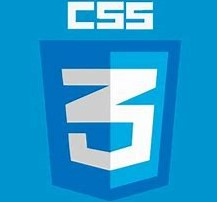

El día de hoy trabajamos con HTML5, tanto en su concepto como en la práctica, para el concepto primero investigamos que era, algunas de sus caracteristicas en comparación con la versión anterior y masomenos como se utiliza, además de la explicación dada por el profesor y para la practica, utilizamos el bloc de notas para hacer una página web con algunos tipos de etiquetas.

El día de hoy trabajamos con Github, el profesor nos explicó como funciona Github para el desarrollo de sistemas y nos dijo como subiríamos las versiones de nuestra bitacora al actualizarla con cada día de clases.
El día de hoy al tener en cuenta que el internet no funcionaba de la mejor manera y después no funcionara en lo absoluto, el profesor optó por darnos clase en el pizarrón, nos habló sobre las "divisiones" en las páginas web y como es que estan disponibles aun que no nos demos cuenta, además de que nos comentó algunas cosas sobre CSS el cual nos servirá para darle un mejor aspecto a nuestra página web. Después de darnos la información, el profesor nos indicó que trataramos de darle una buena presentación a nuestra página sin usar CSS y utilizando solamente HTML, con lo cual estamos trabajando actualmente.
